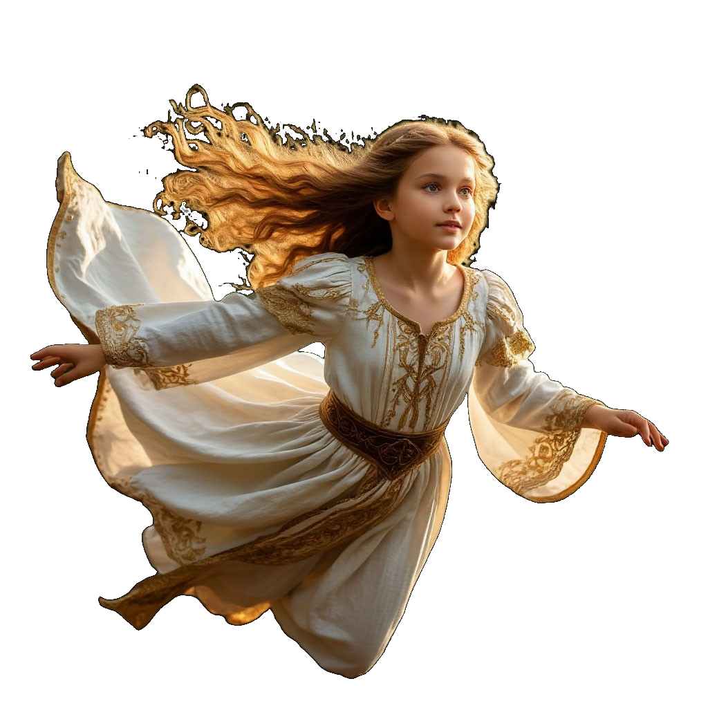
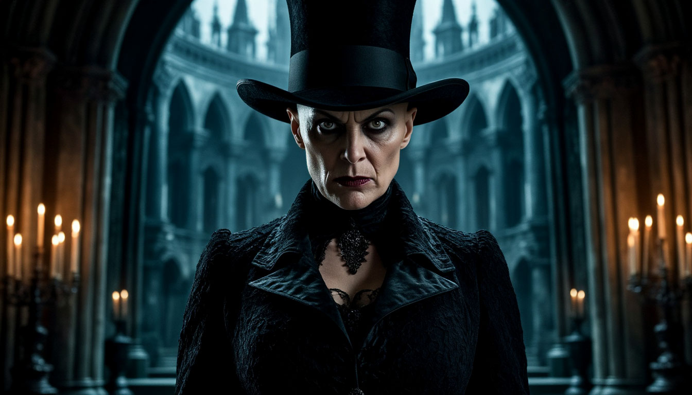
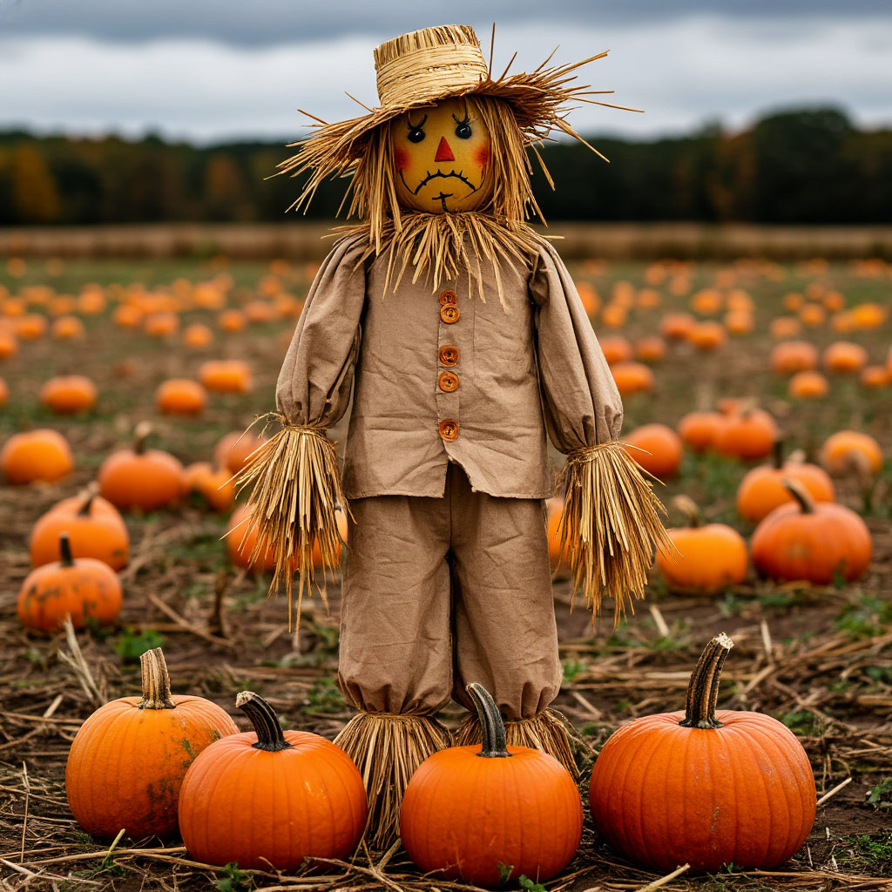
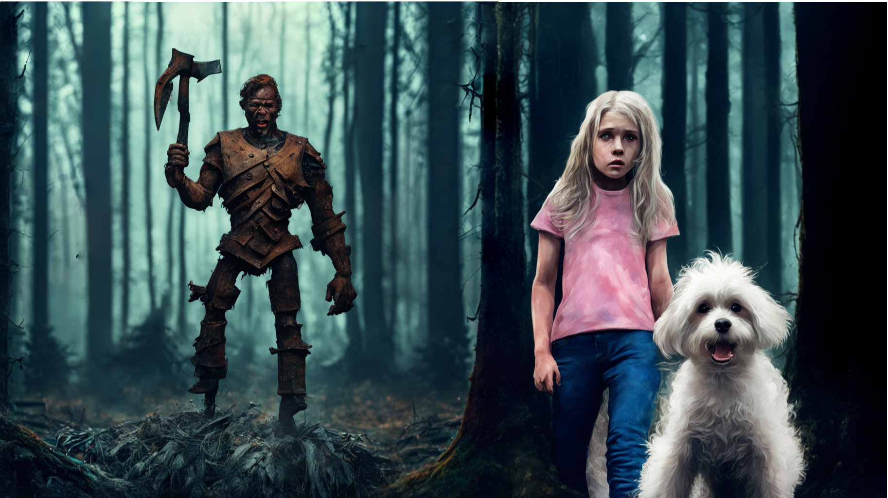
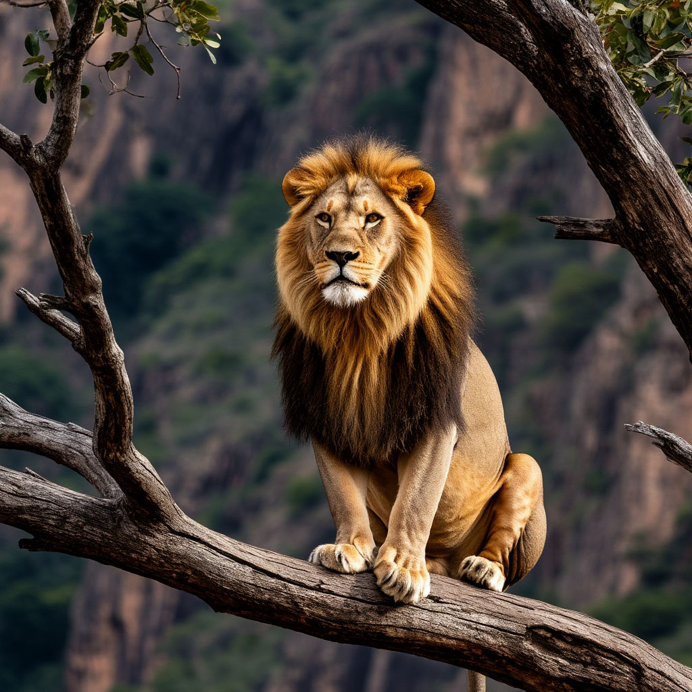

Изумрудный город (англ. Emerald City) — вымышленный город из цикла повестей Лаймена Фрэнка Баума о сказочной стране Оз, а также написанных по их мотивам произведений Александра Волкова и других авторов. Впервые город упоминается в первой книге цикла — «Удивительный волшебник из страны Оз» (1900).
Расположение: город находится в волшебной стране Оз, которая в сказках Баума расположена на далёком неизвестном континенте посреди непроходимой пустыни. У Волкова страна находится в Северной Америке, помимо пустыни, окружена кольцом гор.
Элли и Тотошка — главные герои сказки Александра Волкова «Волшебник Изумрудного города» Элли — добрая и храбрая девочка из Канзаса. Её наивность и искренность помогают ей завоёвывать сердца окружающих. Первоначально Элли выглядит как обычная девочка, стремящаяся вернуться домой, но по мере сюжета она проявляет свою силу характера, смелость и лидерские качества. Её доброта проявляется в заботе о новых друзьях и стремлении помочь им достичь их целей, несмотря на собственные страхи и сомнения. Тотошка — маленький чёрный терьер, сопровождающий Элли на протяжении всей истории. Он не говорит, но его поведение и реакция на события передают его характер. Тотошка предан и всегда готов защитить свою хозяйку, даже если против него стоят более сильные противники. В ряде ситуаций Тотошка оказывается важным героем, помогающим группе избежать опасностей или обнаружить скрытые угрозы. |
|  | Виллина — добрая волшебница, правительница Жёлтой страны. Внешне выглядит как маленькая седая старушка в остроконечной шляпе и белой мантии, украшенной блестящими звёздочками. Способности Виллины: Мгновенное перемещение. Виллина черпает знания и заклинания из волшебной книги — огромного тома, который легко уменьшает до размеров крохотной книжечки и прячет в складках мантии. Использование чёрной магии. Помимо белой магии, Виллина использует и чёрную, но только в целях защиты от неприятеля. |
|  | Бастинда — вымышленный персонаж, злая колдунья, правительница Фиолетовой страны, сестра другой злой волшебницы — Гингемы. Некоторые характеристики персонажа: Отличалась мерзким, вздорным характером. К моменту захвата Фиолетовой страны (примерно за 400 лет до основных событий сказочного цикла) Бастинда была старухой. Единственный глаз колдуньи мог видеть на огромные расстояния.Бастинда боялась темноты и воды (ей была предсказана смерть от воды, поэтому она «пятьсот лет не умывалась, не чистила зубов, пальцем не прикасалась к воде»). |
|  | Страшила - это живое соломенное пугало, которое мечтало получить мозги и стало впоследствии правителем Изумрудного города.
Некоторая информация о Страшиле. Страшила — первый друг Элли и Тотошки в Волшебной стране. Во время битвы с Летучими Обезьянами был уничтожен, но после гибели Бастинды восстановлен. Получив от Гудвина мозги (смесь отрубей, булавок и иголок), наконец поверил в собственный ум и был оставлен преемником Великого и Ужасного. Дважды возглавлял оборону Изумрудного города от армий Урфина Джюса, дважды, после падения города наотрез отказывался сотрудничать с завоевателем. |
|  | Это Железный Дровосек. Когда-то был обычным человеком из народа Жевунов.
Злая волшебница Гингема заколдовала топор, который отрубил Дровосеку сначала ноги, затем руки, а потом и голову. Друг-кузнец раз за разом заменял утраченные части тела на железные. От прежнего Дровосека осталась только душа.Став полностью железным, Дровосек решил, что не может любить свою невесту, потому что кузнец не сумел сделать ему сердце. Желание получить настоящее живое сердце стало заветной мечтой Дровосека.
Несмотря на внешнюю жёсткость и механическую природу, Дровосек страдает от недостатка сердца, считая, что без него не способен любить и сострадать. На протяжении всей истории он многократно проявляет сочувствие и сострадание к окружающим, что свидетельствует о его искренней доброте и желании помогать. В процессе путешествия Дровосек обрел новый смысл жизни: он узнал, что сердце — это не только орган, но и состояние души, и научился любить и быть любимым несмотря на свою железную оболочку. |
|  | Это Лев (Трусливый Лев). Он был царем зверей. Изначально назывался Трусливым Львом, поскольку, в отличие от большинства зверей своего вида, был обделён храбростью и очень из-за этого страдал. Лев символизирует парадокс страха и мужества. С самого детства он страдал от страха, хотя внешне выглядел устрашающим. Лев не смирился со своим страхом, а искал способ его преодолеть.
Некоторые черты льва: Смелость, проявляющаяся в ситуациях, когда опасность угрожала друзьям. Например, несмотря на страх, Лев перенёс друзей через пропасть, спасая их от саблезубых тигров. Любовь к друзьям. Проявилась, когда во время переправы через реку Лев тащил на себе плот, плывя в холодной воде, которой, как и все кошки, очень боялся. |
По нажатию на текст вы можете подробнее узнать об Изумрудном городе. Удачи вам в познании этого замечательного мира и их обитателях!
А тут есть ссылка на новый фильм "Волшебник Изумрудного города. Дорога из желтого кирпича".
Делала Доровская Софья Александровна.